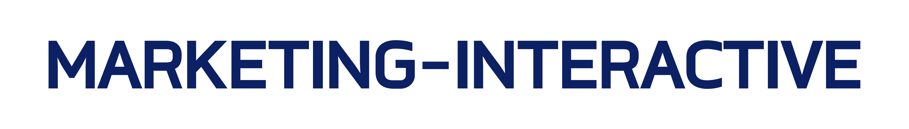

Knowledge Hub
Media Coverage

Making a comeback: Nusantics' CEO on Playbook for Resilience and Agility
Revata Utama, CEO and co-founder, reflects on resilience, hard choices and the work of rebuilding the company.
IMF, Unhan, and Nusantics Collaborate on Healthcare Downstreaming
Indonesia Maju Foundation signed an MoU with Universitas Pertahanan and Nusantics to form a research, development and industrialisation consortium.
Nusantics Offers CeKolam for Shrimp and Fry Health!
Indonesia is a major shrimp producer, yet disease causes many pond failures. Nusantics offers CeKolam, a health check for shrimp and fry.
Xurya, Nusantics, and Komunal Named Top Start-ups at G20 DIN 2022
Xurya, Nusantics and Komunal were chosen as Top Start-ups at the G20 Digital Innovation Network (DIN) 2022, held in Bali on 2–4 September 2022.
G20 DIN to Help Advance Indonesian Start-ups
The Digital Innovation Network (DIN), a side event of the 2022 G20 Digital Economy Working Group (DEWG) meeting, can help promote start-ups in Indonesia, the Communication and Informatics Minister has said.
Bio Farma Claims mBioCov-19 Test Kit Can Detect the Omicron Variant
PT Bio Farma (Persero) claims its mBioCov-19 COVID-19 PCR test kit, developed with Nusantics, can detect the Omicron variant with 100 percent accuracy.
Claimed Advantages of BioSaliva, the Gargle-Method PCR Test by Biofarma and Nusantics
A COVID-19 detection test using a throat gargle can be an alternative to nose and throat swabs. The method uses BioSaliva, developed by Nusantics with PT Biofarma.